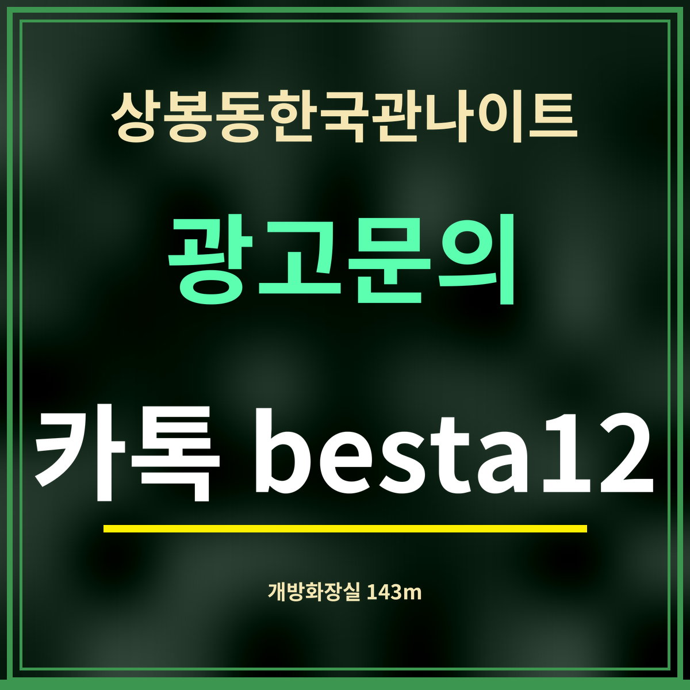

19세 미만 출입 금지
상봉동한국관나이트 근처 개방화장실 정리, 143m부터
제휴 없는 정보 안내 · 카카오맵 「개방화장실」 검색(2026년 9월 27일)과 직선거리입니다. 개방 시간은 목록에 없어 적지 않았습니다.

요약: 상봉동한국관나이트에서 가장 가까운 개방화장실은 직선 143m(망우로 336), 다음이 195m(망우로 307)입니다. 상봉역 안(망우로 297)에도 개방화장실이 있습니다.
거리순 개방화장실
| 이름 | 주소 | 직선거리 |
|---|---|---|
| 코스트코상봉점 | 중랑구 망우로 336 | 143m |
| 리베로 | 중랑구 망우로 307 | 195m |
| 상봉역 | 중랑구 망우로 297 | 272m |
| 상봉역 | 중랑구 망우로 297 | 298m |
| 이레59 | 중랑구 봉우재로33길 25 | 342m |
| 상봉1동주민센터 | 중랑구 상봉중앙로1길 6 | 362m |
| 중랑우체국 | 중랑구 망우로 271 | 535m |
| 대양주유소 | 중랑구 봉우재로 105 | 577m |
개방화장실을 쓸 때
개방화장실은 건물이나 시설이 문을 연 시간 동안 누구나 쓸 수 있게 열어 둔 화장실입니다. 상가나 공공시설 안에 있는 곳은 그 건물이 닫으면 함께 닫힐 수 있어, 늦은 시각에는 역 안처럼 오래 여는 곳이 더 확실합니다.
다른 사람도 함께 쓰는 곳이니 깨끗하게 쓰고, 두고 가는 물건이 없는지 나올 때 한 번 살펴보세요.
화장실과 함께 알아 둘 약국
속이 불편하거나 상비약이 필요할 때를 대비해 약국 위치도 함께 적어 둡니다. 가장 가까운 곳은 망우로 305의 약국으로 직선 222m, 다음은 면목로 490의 약국(273m)입니다(카카오맵 검색 · 2026년 9월 27일). 약국 영업시간은 목록에 없어, 늦은 시각이라면 문을 열었는지 먼저 확인하세요.
자주 묻는 것
가장 가까운 개방화장실은 어디인가요?
망우로 336에 있는 개방화장실로, 상봉동한국관나이트에서 직선 143m입니다.
망우로 336에 있는 개방화장실로, 상봉동한국관나이트에서 직선 143m입니다.
역 안에도 있나요?
상봉역(망우로 297) 안에 개방화장실이 있습니다.
상봉역(망우로 297) 안에 개방화장실이 있습니다.
밤에도 열려 있나요?
개방 시간은 곳마다 달라 여기에는 적지 않았습니다. 늦은 시각에는 역 안이 확실합니다.
개방 시간은 곳마다 달라 여기에는 적지 않았습니다. 늦은 시각에는 역 안이 확실합니다.
한 줄 정리: 상봉동한국관나이트 근처 개방화장실은 143m부터 — 늦은 시각엔 상봉역 안이 확실합니다.
잠깐 쉴 곳은 동네 공원도 있습니다.